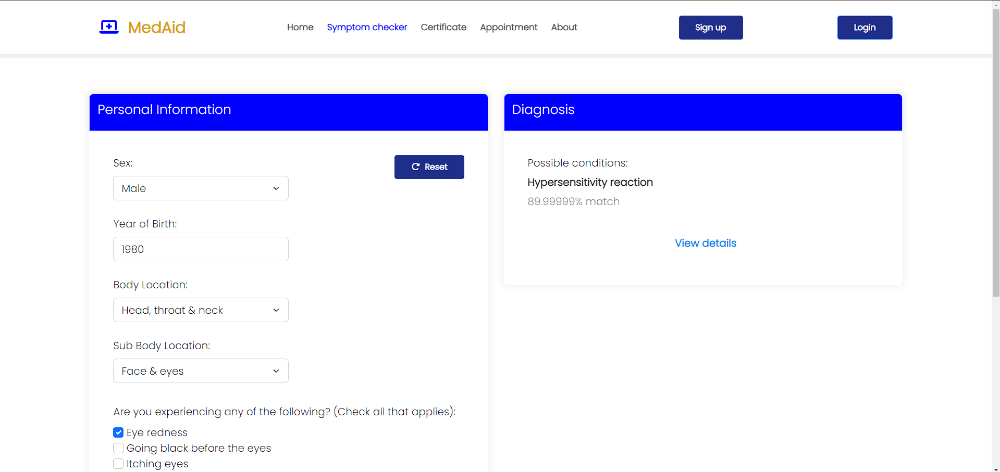
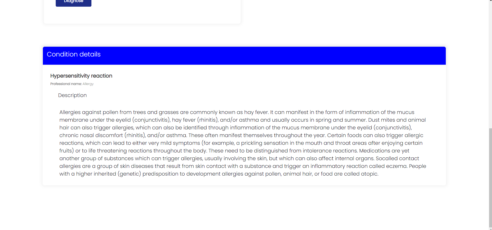
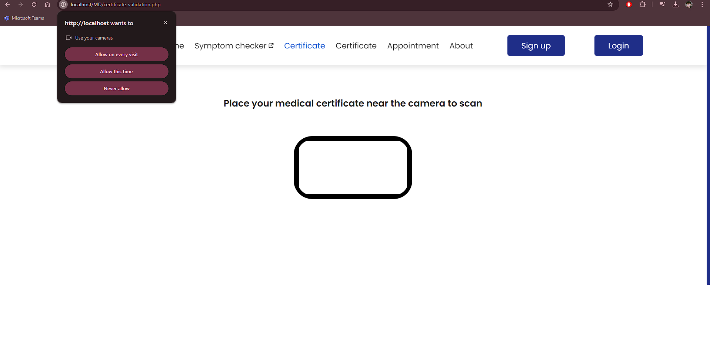

MedAid: Symptom Checker and Clinic Appointment System
This is a group project for our course subject that demonstrates our knowledge using the PHP language. We used APIMedic Symptom checker API for the symptom checker. It also has a clinic appointment system for our University and a medical certificate validatior system issued by our school clinic.
Project Status: In Development
Tech Stack: HTML, CSS, Bootstrap, JavaScript, PHP, MySQL
Home Page

Symptom Checker

Symptom Checker
